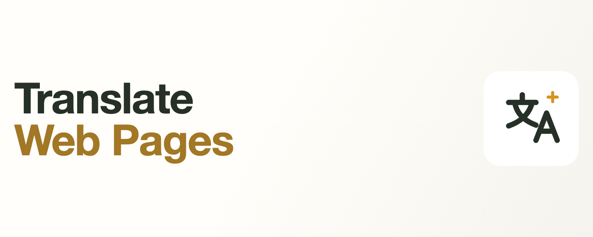
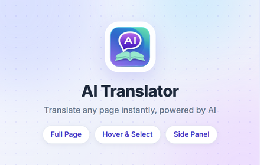
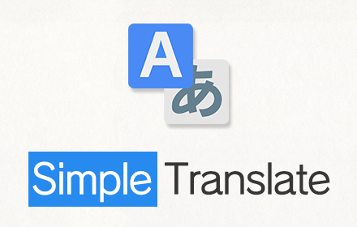
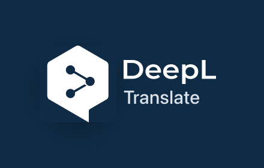
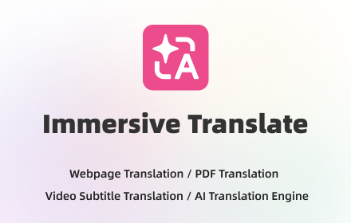
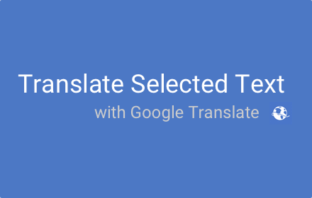

AI Translator
Yours
| 1 | Webpage Translator – AI Translator Recommended | 34/75 | webpage translator | Webpage Translator – AI Translator |
| 2 | AI Translator – Webpage Translator | 34/75 | webpage translator | AI Translator – Webpage Translator |
| 3 | Webpage Translator: Read with AI Translator | 43/75 | webpage translator | Webpage Translator: Read with AI Translator |
| 4 | AI Translator: Webpage Translator & Selected Text | 49/75 | webpage translator | AI Translator: Webpage Translator & Selected Text |
| 5 | AI Translator | 13/75 | ai translator | AI Translator |
| 1 | Use an AI webpage translator for text and pages. Translate selected text, follow new page text, and restore originals. | 118/132 | webpage translator | Use an AI webpage translator for text and pages. Translate selected text, follow new page text, and restore originals. |
| 2 | Read pages in your language with a webpage translator. Translate selected text and show the original when needed. Recommended | 113/132 | webpage translator | Read pages in your language with a webpage translator. Translate selected text and show the original when needed. |
| 3 | Translate text and pages with a webpage translator powered by AI. Keep links and page structure, then restore originals. | 120/132 | webpage translator | Translate text and pages with a webpage translator powered by AI. Keep links and page structure, then restore originals. |
| 4 | Read with an AI webpage translator. Translate text and pages with a 20,000-character daily allowance per Google account. | 120/132 | webpage translator | Read with an AI webpage translator. Translate text and pages with a 20,000-character daily allowance per Google account. |
| 5 | A webpage translator for text and pages. Sign in with Google, choose a language, and show the original when you need it. | 120/132 | webpage translator | A webpage translator for text and pages. Sign in with Google, choose a language, and show the original when you need it. |

// Proposed changes only. Nothing below is applied to extension/.
// extension/src/background.ts — add beside withSession().
// Reuses the existing Job type and serializes extension-local updates.
type ReviewState = {
successes: number;
completedJobIds: string[];
state: 'counting' | 'later' | 'done';
dismissals: number;
laterUntil?: number;
};
const REVIEW_KEY = 'marketingReviewV1';
let reviewTransaction: Promise<unknown> = Promise.resolve();
function updateReview<T>(fn: (value: ReviewState) => T | Promise<T>): Promise<T> {
const next = reviewTransaction.then(async () => {
const saved = (await chrome.storage.local.get(REVIEW_KEY))[REVIEW_KEY] as ReviewState | undefined;
const state = saved ?? { successes: 0, completedJobIds: [], state: 'counting', dismissals: 0 };
const result = await fn(state);
await chrome.storage.local.set({ [REVIEW_KEY]: state });
return result;
});
reviewTransaction = next.catch(() => undefined);
return next;
}
async function recordTranslationSuccess(job: Job): Promise<void> {
if (job.status !== 'completed' || !job.translations?.length ||
job.translations.some((part) => typeof part.text !== 'string' || !part.text.trim())) return;
await updateReview((review) => {
if (review.state === 'done' || review.successes >= 5 || review.completedJobIds.includes(job.id)) return;
review.completedJobIds.push(job.id); // At most five IDs are retained; never store translation text.
review.successes++;
});
}
async function dismissReview(): Promise<void> {
await updateReview((review) => {
review.dismissals++;
if (review.dismissals >= 2) review.state = 'done';
else { review.state = 'later'; review.laterUntil = Date.now() + 14 * 24 * 60 * 60 * 1000; }
});
}
async function rateReview(): Promise<void> {
await chrome.tabs.create({
url: `https://chromewebstore.google.com/detail/${chrome.runtime.id}/reviews`,
});
await updateReview((review) => { review.state = 'done'; });
}
// Existing handle(), combined translation:get / translation:cancel branch:
// Keep await ownJob(...) and the existing api<Job>(...) call intact.
// Immediately before its existing `return job;`, insert:
if (request.type === 'translation:get') await recordTranslationSuccess(job);
// This counts a real completed backend result, never clicks, queued/running requests,
// failures, or cancellations. A page batch counts once even when polled repeatedly.
// Existing submitJob(): AFTER the withSession(...) owner-state write and
// immediately before its existing return job, also insert:
await recordTranslationSuccess(job);
// POST can already return a completed job on an idempotent retry. The callers
// skip GET polling in that case, so both paths must record confirmed success.
// The same job ID is counted at most once across both paths.
// extension/src/shared/protocol.ts — extend RuntimeRequest with:
// | { type: 'review:rate' | 'review:dismiss' }
// Existing handle() — add before default:
// case 'review:rate': return rateReview();
// case 'review:dismiss': return dismissReview();
// Also reject these two message types when sender.tab is present: only the
// packaged popup may dismiss or launch the review page, not content scripts.
// extension/src/ui/main.tsx — local ReviewCard component; render once at the
// bottom of the popup before support-links, outside result and progress cards.
function ReviewCard({ busy, error, signedIn }: { busy: boolean; error: string; signedIn: boolean }) {
const [eligible, setEligible] = useState(false);
useEffect(() => {
let alive = true;
const check = async () => {
const record = (await chrome.storage.local.get('marketingReviewV1')).marketingReviewV1 as ReviewState | undefined;
const page = await send<PageState>({ type: 'page:status' });
const idle = page.status === 'idle' || page.status === 'translated';
const due = record && record.successes >= 5 && record.state !== 'done' &&
(record.state !== 'later' || Date.now() >= (record.laterUntil ?? 0));
if (alive) setEligible(Boolean(signedIn && !busy && !error && idle && due));
};
void check().catch(() => { if (alive) setEligible(false); });
const timer = setInterval(() => { void check().catch(() => setEligible(false)); }, 1200);
return () => { alive = false; clearInterval(timer); };
}, [busy, error, signedIn]);
if (!eligible) return null;
const t = (key: string) => chrome.i18n.getMessage(key);
return <div className="review-card">
<span>{t('reviewPrompt')}</span>
<button onClick={() => { void send({ type: 'review:rate' }).then(() => setEligible(false)); }}>{t('reviewRate')}</button>
<button aria-label={t('reviewDismiss')} onClick={() => { void send({ type: 'review:dismiss' }).then(() => setEligible(false)); }}>×</button>
</div>;
}
// <ReviewCard busy={busy || authBusy} error={error} signedIn={Boolean(auth.user)}/>
// Use one compact line/card consistent with existing popup CSS. No modal,
// badge, notification, reward, star filtering, or satisfaction gate.
// Share/import ReviewState into the UI or repeat the type as appropriate.
// The locale draft in meta/locales/en/messages.json supplies the three strings.
// Apply the separate manifest locale recommendation before using chrome.i18n.
// Proposed changes only. Existing source remains unchanged.
// extension/src/background.ts — REPLACE its current onInstalled listener,
// do not add a second listener. Keep onStartup/createMenus behavior unchanged.
chrome.runtime.onInstalled.addListener((details) => {
void createMenus();
if (details.reason === chrome.runtime.OnInstalledReason.INSTALL) {
void chrome.tabs.create({ url: chrome.runtime.getURL('welcome.html') });
}
});
// New extension/welcome.html (packaged and bundled locally):
// <!doctype html>
// <html lang="en"><head><meta charset="UTF-8"><meta name="viewport" content="width=device-width,initial-scale=1"><title>AI Translator</title></head>
// <body><main>
// <h1 data-i18n="welcomeTitle"></h1><p data-i18n="welcomeIntro"></p>
// <ol><li data-i18n="welcomePin"></li><li data-i18n="welcomeSignIn"></li><li data-i18n="welcomeFirstResult"></li></ol>
// <p data-i18n="welcomeAllowance"></p><p data-i18n="welcomePrivacy"></p>
// <button id="preferences" data-i18n="welcomeOpenSettings"></button>
// <a href="https://ai-translator-ext.web.app/privacy" data-i18n="welcomeReadPrivacy" target="_blank" rel="noreferrer"></a>
// </main><script type="module" src="/src/welcome.ts"></script></body></html>
// New extension/src/welcome.ts:
for (const element of document.querySelectorAll<HTMLElement>('[data-i18n]')) {
element.textContent = chrome.i18n.getMessage(element.dataset.i18n!);
}
document.documentElement.lang = chrome.i18n.getUILanguage();
document.title = chrome.i18n.getMessage('welcomeTitle');
document.getElementById('preferences')?.addEventListener('click', () => {
void chrome.runtime.openOptionsPage();
});
// extension/vite.config.ts — add the local welcome page to the existing
// build.rollupOptions.input object:
// welcome: resolve(import.meta.dirname, 'welcome.html')
// Apply the manifest-locale recommendation first, then rebuild.
// Use the existing local brand artwork and matching local styles; no remote
// scripts, fonts, tracking, uninstall URL, or extra permissions are needed.
// English welcome strings are drafted in meta/locales/en/messages.json.
// This page does not request site access or start translation automatically.





| Name | Short description | Users | Rating | Langs | Shots | Tile | Marquee | Version | KW in name | KW in desc | |
|---|---|---|---|---|---|---|---|---|---|---|---|
| AI Translator 13/75 |
Translate selected text and whole webpages with AI. Restore originals in one click. 83/132 |
— | — | 0 | 5 | ✓ | ✓ | 1.1.0 |
— | 3 | |
| AI Translator 13/75 |
Translate selected text into 38 languages with AI. Select text on any page or use the popup. An AI Anyone product. 114/132 |
4k | 2.7 10 |
1 | 2 | ✓ | ✗ | 4.6 2026-04-18 |
— | 0 | |
| Linguist - web page translator 30/75 |
Web page translation, text translation, dictionary, history, custom translators, all you need to break language barriers 120/132 |
200k | 4.37 373 |
57 | 5 | ✓ | ✗ | 7.1.0 2026-08-08 |
— | 0 | |
| AI Translator - Smart AI Translation (Hover, Select, Context Menu) 66/75 |
Instant AI translator. Hover, select, or translate the whole page bilingually. 50+ languages, dark mode, side panel. 116/132 |
530 | 5 9 |
20 | 5 | ✓ | ✓ | 1.5.1 2026-09-13 |
— | 0 | |
| DeepTranslate - Full Page & Bilingual Translator & AI-Powered Translation 73/75 |
Translate web pages effortlessly with Google Translate and OpenAI. Supports quick text translation and PDF imports for translation. 131/132 |
70k | 3.85 488 |
11 | 5 | ✓ | ✓ | 1.7.9 2026-10-20 |
— | 0 | |
| Simple Translate 16/75 |
Quickly translate selected or typed text on web pages. Supports Google Translate and DeepL API. 95/132 |
200k | 4.03 478 |
32 | 5 | ✓ | ✗ | 3.1.0 2026-08-25 |
— | 0 | |
| DeepL: translate and write with AI 34/75 |
Translate while you read and write with DeepL Translate, the world’s most accurate translator. 94/132 |
4M | 4.52 13k |
19 | 3 | ✓ | ✗ | 1.104.2 2026-10-19 |
— | 0 | |
| Immersive Translate: AI Web, PDF & Video Translator 51/75 |
Free Translate Website, Translate PDF & Epub eBook, Translate Video Subtitles in Bilingual 90/132 |
3M | 4.55 3k |
21 | 4 | ✓ | ✓ | 1.34.2 2026-10-20 |
— | 0 | |
| Translate Selected Text 23/75 |
Translate selected text with Google Translate 45/132 |
100k | 4.15 772 |
31 | 3 | ✓ | ✓ | 3.0.0-stable 2024-06-02 |
— | 0 |
Webpage Translator – AI Translator helps you read articles, understand product information, and work with text in another language. Translate selections or webpage text in place, then show the original when you need it. ✨ WHAT IT DOES • Pro: right-click a static website image to create and download a PNG with translated text. Pro is granted manually and includes five images per UTC day. • Translate selected text in a small result bubble without leaving the page. • Type or paste text into the popup and copy the translation. • Replace eligible webpage text with a translation while preserving links and page structure. • Translate newly appearing text while page translation is active, including text added as you scroll. • Stop page translation or restore the original text with the page controls. • Choose a language from the list or enter another language name. Use automatic source-language detection when needed. • Choose icon, instant-selection, or manual translation, plus light, dark, or system appearance. The interface is available in English and Ukrainian. 🚀 HOW TO USE 1. Pin AI Translator to the toolbar, open it, and sign in with Google. 2. Choose your translation languages. Leave the source on Detect language if you are unsure. 3. Select text and click the translation icon, paste text into the popup, or choose Webpage and start page translation. Use Show original to return to the source text. 🎯 WHO IT'S FOR Read foreign-language articles and compare the translation with the original. Understand product details or instructions while staying on the page. Use a webpage translator alongside your language studies or daily work. 🔒 PRIVACY Requested text and, for Pro image translation, the selected image are sent to the translation server and processed through an AI provider using OpenAI. When page translation is active, eligible new page text is also sent. The optional instant-selection mode sends selected text automatically. Preferences stay in Chrome. Originals used for restoration stay in the page's memory. Server jobs temporarily store source text and results; Pro originals and translated images are stored privately with authenticated owner access; records are marked to expire after 24 hours, and automatic deletion may happen later. Google sign-in and daily usage counters support your account and allowance. There is no translation-history feature. ❓ FAQ Does the webpage translator work everywhere? It works with eligible text on regular websites. Browser settings pages, the Chrome Web Store, PDF documents and canvas text are not supported. Whole-page translation skips images. Pro image translation separately supports public static PNG/JPEG/WebP images up to 10 MB and 20 megapixels. Form fields, editable areas, hidden content, and code blocks are skipped. Website behavior and AI language coverage can affect results. What is included? Free access includes 20,000 source characters per Google account each day, resetting at 00:00 UTC. The popup accepts up to 4,000 characters per request. Long pages can use the remaining daily allowance. AI translations can contain errors, and image editing can alter small visual details. Check the result before use. Privacy: https://ai-translator-ext.web.app/privacy Support: https://ai-translator-ext.web.app/support Contact: balubenko.ink@gmail.com
Introducing the AI Translator extension - the ultimate tool for seamless communication and understanding. With cutting-edge AI technology, our extension translates text in real-time, providing accurate and natural translations in over 100 languages. Whether you're traveling abroad, doing business with international clients, or simply trying to understand a foreign language text, our extension has got you covered. Our extension is designed with SEO in mind, ensuring that your online content is easily discoverable by search engines. Whether you're a blogger, marketer, or content creator, our extension helps you reach a global audience, while eliminating language barriers. With our extension, you can optimize your content for multiple languages and target new audiences with ease. But that's not all - our extension is also the perfect companion for our AI Anyone extension. With AI Anyone, you can talk to anyone, dead or alive, with realistic and natural conversations. Whether you want to have a chat with Einstein, Shakespeare, or your deceased loved one, AI Anyone makes it possible. And with the AI Language Translator Extension, you can have those conversations in any language. Don't let language barriers hold you back from reaching your full potential - with the AI Language Translator Extension, the world is your oyster. And with the added capability of AI Anyone, the possibilities are endless. Our extensions are completely free, with no hidden costs or subscription fees, so download them today and experience the power of AI-based language translation and conversation for yourself.
Translate web pages, highlighted text, Netflix subtitles, private messages, speak the text, and save important translations to your personal dictionary to learn words in over 130 languages. Encountering unfamiliar words while reading an online article? Just select text on the page and click the button to translate it. You can speak the translated and original text, and save the translation to your dictionary. If you need to input text and translate it, you can just click the Linguist button to open the pop-up window. Full-page translation With Linguist, you can conveniently translate entire web pages with just one click. All you need to do is select "Translate page" from the context menu on any webpage, and it will be instantly translated into your preferred language. Make your own personal knowledge base with Linguist! Any translated text is saved in the history, and you can add your favorite translations to your dictionary. You can search for translations in both your dictionary and history, and even filter your translations by language. The dictionary feature is available even when you are offline, making it an ideal tool for language learners or travelers who require constant access to their word lists. Offline translation and privacy Linguist can translate texts even without the internet - a feature that no other extension has. The offline translator allows you to translate texts on your device without sending any private messages over the internet, ensuring your privacy. Simply enable the feature on the options page to maintain your privacy while translating work emails and personal messages. Customize Linguist as you wish Unlike other browser extensions, Linguist is not just a wrapper over the Google Translator Widget; it's a complete and independent translation system. This is why Linguist is not limited in what features may be implemented. Linguist is the leading extension for translating pages. Join Linguist and start using the most advanced features now and always stay at the forefront of technological progress in the future. You have complete control over your data and how Linguist works for you: - Control web pages auto-translation by language and domain name - Choose a service that will translate your texts - You may use popular services like Google, Yandex, Bing, DeepL, Reverso - You may use an offline translator that will translate texts on your device (not sent to the internet at all) - You may use custom translator modules to use your own translation service. Read more: https://github.com/translate-tools/linguist/blob/master/docs/CustomTranslator.md - Choose a service to speak texts - Customize the user interface and available features Privacy Linguist is free, open-source, and never collects your personal data. If you want to report a bug, suggest a feature, or donate, visit GitHub: https://github.com/translate-tools/linguist
🌐 AI Translator - Smart, instant translation powered by the latest AI Want to read foreign articles, documentation, or any web content without leaving the page? AI Translator gives you accurate, context-aware translation in a single gesture. 🚀 ⚡ KEY FEATURES ✅ Translate the whole page: bilingual mode keeps the original and puts the translation right under each paragraph, or replace the text in place. Menus, header and footer are left alone so the layout never breaks (turn on "Translate the whole page" if you want them too). ✅ Text translator panel: open the side panel, paste up to 5000 characters, translate with Ctrl+Enter, swap languages, copy the result. ✅ Hover to translate: move your mouse over any text for an instant tooltip translation. ✅ Select to translate: highlight text, then click the floating icon for a full popup. ✅ Right-click to translate: use the context menu on any selection. ✅ Powered by the latest AI: high-quality, context-preserving translation, not word-by-word. The AI builds a glossary for each page so terminology stays consistent. ✅ 50+ languages: Vietnamese, English, Chinese (Simplified & Traditional), Japanese, Korean, Thai, Spanish, French, German, Russian, Arabic, and many more. ✅ Interface in 21 languages, with right-to-left support for Arabic, Persian and Hebrew. ✅ Dark mode and light mode. ✅ Turn hover lookup off on any site you choose. 📖 PERFECT FOR - Reading foreign articles, research papers and documentation - Learning a new language with the original text side by side - Following international news - Translating long pages without copying and pasting 🔒 PRIVACY No account, no tracking. Your text is sent only when you ask for a translation, and translations are not stored.
🔵 Why Choose DeepTranslate? 🔵 DeepTranslate integrates multiple translation engines into a simple, easy-to-use tool, providing comprehensive language support and bilingual display. There's no need to switch between websites or apps—just one click allows you to translate and seamlessly toggle between the original text and translation. It supports popular services like Google Translate, OpenAI, and Microsoft Translator, making it ideal for translating websites, news, Gmail, WhatsApp Web, X, Twitter, Facebook, Google Scholar papers, and more. 🔵 Why Use DeepTranslate? 🔵 DeepTranslate is not just a translation tool—it’s your multilingual world exploration assistant. Here are its key features: 1️⃣ Completely Free: Enjoy all features without a subscription. 2️⃣ Powerful Multilingual Support: Automatically detects and supports over 120 languages, including Chinese, English, Spanish, Japanese, and many others. 3️⃣ One-Click Web Translation: Translate entire web pages, from news sites to social media and academic papers, with a single click, and view them in bilingual mode. 4️⃣ Social Media Translation: Effortlessly translate posts, comments, and private messages on WhatsApp, X, Twitter, Facebook, and Instagram. 5️⃣ Academic Resource Translation: Quickly understand foreign academic papers on platforms like Google Scholar and PubMed. 6️⃣ Flexible Engine Switching: Switch between OpenAI, Google Translate, and Microsoft Translator for the best translation quality. 7️⃣ Convenient Text Translation: Access quick text translation anytime, anywhere. 8️⃣ User-Friendly Experience: Whether you’re a first-time user or an expert, enjoy a smooth and intuitive interface. 🔵 Upcoming Features 🔵 We’re developing new features to make DeepTranslate seamless across various scenarios: ✅ Auto Video Subtitle Translation: Generate bilingual subtitles for platforms like YouTube and Vimeo, ensuring you understand every video. ✅ Floating Window: Translate quickly with a floating window, without delays. 🔵 How Does DeepTranslate Stand Out? 🔵 1️⃣ All-in-One Platform Support: Whether browsing, reading academic papers, or interacting on social media, DeepTranslate offers comprehensive language support, eliminating the need for multiple tools. 2️⃣ Bilingual Learning Assistant: Improve your language skills with bilingual mode and multi-engine comparison for better understanding and memory retention. 3️⃣ Real-Time Updates & Support: We focus on innovation and continuously enhance features through fast iterations and user feedback, ensuring access to the latest translation technology. 📪 For any questions or suggestions, contact us at support@deeptranslate.ai. We look forward to your feedback and are committed to improving your DeepTranslate experience.
When you select text, the translation button pops up and the translation is displayed instantly. If you enable "Do not display the button if translation is not required" option, you will not get frustrated by the button appearing when it is not necessary. In the toolbar popup, translate the input text in real time. If you enable "Automatically switch to the second language" option, you can do : When English is input, it is translated into Japanese, and when Japanese is input, it is translated into English. You can also translate from the context menu. You can select "Translate this page", "Translate selected text", and "Translate selected link" from the menu on the page or tab. Supports Google Translate and DeepL API. Firefox version: https://addons.mozilla.org/en/firefox/addon/simple-translate/ Edge version: https://microsoftedge.microsoft.com/addons/detail/cllnohpbfenopiakdcjmjcbaeapmkcdl
Stay informed, work smarter, and communicate globally without leaving your browser. Trusted by millions across the globe, DeepL’s Language AI delivers unmatched accuracy and fluency to help you scale faster and bring clarity and efficiency into your daily work. All of that, with the highest levels of data security. Easy to use, hard to beat! The DeepL extension integrates seamlessly into your workflows, eliminating manual and time-consuming tasks. No more losing context by switching tabs or apps! With just a few clicks or by using shortcuts you can customize, the DeepL extension helps you do the following: 🌍 Translate while browsing Do your research and stay up-to-date with information in the language of your choice. With the DeepL extension, you can: - Translate sections on the go - Translate entire pages (unlimited with DeepL Pro) - Automate page translation (only with DeepL Pro) ✍️ Get translation and writing assistance for emails and documents For your productivity, DeepL is integrated into Google Workspace with direct translation and writing assistance in Gmail, Google Docs, and Google Slides. Read and write emails, and create and edit various documents, including papers, presentations, and reports. Adapt your work instantly to your audience, objectives, and standards: - Translate where you work, with possible alternatives and a dictionary - Get text corrections and suggestions for more clarity and adapt your writing style - Apply your company, domain, or client glossaries to your documents (with DeepL Pro) 🚀 Translate and polish your comms on the spot DeepL is also integrated into content, messaging, and social media platforms—YouTube, WhatsApp, LinkedIn, and X. Stay in touch and exchange with your peers, partners and collaborators effectively, with instant translation and writing assistance: - Send clear replies tailored to your goals and audience - Engage with multilingual communities in a timely and relevant manner and extend your reach DeepL supports translation for 30+ languages and offers writing assistance for 5+ languages with an ever-growing language portfolio. Key information 🤝 Plans The free version of the DeepL extension comes with character limitations. In addition, some of our features, such as the glossary or the automated page translation, are only available to DeepL Pro and DeepL Write Pro users. Learn more about all the advantages of DeepL Pro and DeepL Write Pro and find your plan: deepl.com/pro 🔐 Data security The security of your data is our top priority. Per our terms and conditions at deepl.com/en/pro-license, both DeepL Pro and DeepL Write Pro don’t store or use your content to enhance our service, unless you actively agree to it, allowing you to securely translate and refine content containing personal data. However, the free version of our service may use submitted content to improve the DeepL algorithms for all users. Therefore, users shouldn't process any confidential or personal data through the free version. Learn more about our robust security measures and commitment to privacy: deepl.com/pro-data-security Reimagine business communication with DeepL's Language AI platform Read more about our solutions: deepl.com/en/whydeepl
📣 Top-rated AI translation extension [Immersive Translate], supporting webpage, PDF, eBook, video subtitle, image, and manga translation! ⭐⭐⭐⭐⭐ 📣 A trusted translation tool for over 30 million users worldwide. Recommended by major mainstream browsers and awarded Chrome's Best Extension of 2024. 📣 Dual-certified with ISO/IEC 27001 (Information Security Management) and ISO/IEC 27701 (Privacy Information Management). Fully compliant with EU GDPR and Japan APPI privacy requirements, utilizing SSL/TLS encrypted transmission to safeguard your data security and privacy. 💻 Key Features: 📰 Webpage Translation * 🚀 Smart Bilingual Reading: Intelligently identifies the main content area for bilingual webpage translation, minimizing intrusiveness on the original page. This delivers a superior reading experience for foreign websites, hence the name [Immersive Translate]. * 🚀 Deep Website Optimization: Deeply customized for mainstream platforms. Enjoy seamless and highly efficient translation on Google Search, social media platforms like Twitter, Reddit, and Facebook, as well as top news websites. * 🚀 Hover Translation: Simply hover your mouse over any paragraph on any webpage, and the translation will appear immediately below it. Paragraphs are treated as the smallest unit to preserve context, helping you truly understand and learn foreign languages. * 🚀 Select-to-Translate: In the AI era, text selection translation is no longer a simple dictionary lookup; it analyzes context to provide the most accurate word explanations for your current reading. * 🚀 Input Box Translation: Type in your native language in any webpage's input box, press the spacebar three times, and instantly translate your text into your target language. Instantly unlock cross-language Google searches and real-time bilingual chat experiences in tools like ChatGPT. 📋 Document Translation (Supports downloading in bilingual or single-language versions) * 🚀 PDF Translation (Retains Original Formatting): The advanced version supports complex formula recognition, table recognition, and image OCR within PDFs to maximize layout preservation. Perfect for translating foreign literature, academic papers, product manuals, and more. * 🚀 One-Click Formats: Also supports one-click translation for EPUB eBooks, TXT documents, HTML files, and subtitle files (ASS/SRT). 🎞 Bilingual Video Subtitle Translation * 🚀 Mainstream Video Platforms: Automatic bilingual subtitle translation for major online video sites (YouTube, Netflix, etc.). Break down language barriers with one click and connect with global cultures and ideas. * 🚀 Online Video Meetings: Fully compatible with Google Meet, Zoom, Microsoft Teams, and other online conferencing platforms. ⚔️ Manga Translation * 🚀 Online Manga Support: Supports targeted online manga sites, helping non-native fans seamlessly read raw Japanese, Korean, and Western comics, allowing you to catch the latest chapters instantly without language barriers. 🏞️ Image Translation * 🚀 Direct Web Image Translation: Say goodbye to saving and uploading. Simply right-click on web images to translate them directly without interrupting your browsing. Also supports uploading local images for translation. 👨🏻🔬 [Immersive Translate] Exclusive AI Features * 🚀 AI Expert: Set specific industry roles for the AI to deliver highly professional translations for specialized fields. * 🚀 AI Glossary: Create custom glossaries to ensure the AI translates specific terminology consistently, further boosting translation accuracy. * 🚀 AI Smart Context Translation: The system grasps the full text context and professional terminology before translating, providing you with an incredibly accurate translation experience. (Beta Phase) 🔒 Privacy-First Security Design Immersive Translate consistently adheres to a privacy-first product philosophy. We are officially recommended by major browsers and awarded Chrome's Best Extension of 2024. Over 30 million users worldwide use our tool with complete peace of mind. * 🛡️ Clear Content Retention Rules: Webpage translation content is processed according to your chosen service; features requiring temporary file retention will clearly state the processing purpose and deletion rules. * 🛡️ Not Used for AI Training: Within the scope of applicable official translation services, translated content is never used for model training. See our Trust Center for applicability details regarding third-party services and custom APIs. * 🛡️ Encrypted Translation Requests: All translation requests are transmitted through encrypted channels to protect your content during transfer. We do not collect personal information unrelated to translation, nor do we sell or share your data. 💡 Other Features * 🚀 Cross-Platform Support: Enjoy the same immersive translation experience on major desktop browsers and mobile devices. Use our dedicated mobile app or easily browse social media like Twitter and Reddit bilingually via iOS Safari and select Android browsers. * 🚀 Extensive Engine Support: Currently integrates with over 20 global mainstream machine translation services and cutting-edge AI large language models. Freely utilize DeepL, OpenAI, Gemini, and Claude for precise translation across various scenarios. 📧 Contact Us * 🚀 If you have any questions or suggestions while using the extension, feel free to contact our customer support team: Email: support@immersivetranslate.com ❤️ The original intention of the Immersive Translate extension: We hope to help everyone break down language barriers and effortlessly, joyfully, and elegantly access the wealth of foreign language information on the internet. ❤️
This extension allows you to translate the text selection using Google Translate whenever you want. When the extension is installed select some text from a website, right click and select to which language you want to translate the selected text. ** FAQ: ** Q: Why choose this extension and not another one? A: I designed this extension so that it didn't prompt the user for permissions. This way the final user knows that the extension doesn't have the permission to access the content of web pages and monitor the user activity on the Internet (other extensions of this type prompt for this permission). This extension has access only to the content of the selected text when the user clicks the extension context menu and it is used to create a Google Translate app with the text autocompleted. You can configure from the options page which languages you want to show in the context menu. ** Open Source ** This extension is now open sourced! You can check out the source code, contribute, and fill in bugs in the GitHub repository: https://github.com/avm99963/translateselectedtext ** Bugs ** Please, report any bugs or feature suggestions here: https://github.com/avm99963/translateselectedtext/issues ** Note ** Google Translate is a trademark of Google Inc. Use of this trademark is subject to Google Permissions. ** Beta version** As this extension has so many users I've decided to upload a Beta version of the extension to the Chrome Web Store so I can test it before uploading any update to the stable version! This way I can make sure the stable version of the extension is 100% bug-free. If you want to test the bleeding edge of this extension before everybody else, join the Google Group and download the extension (there may be bugs, you've been warned): * Google Group: https://groups.google.com/forum/#!forum/gtranslator-beta * Translate Selected Text (Beta): https://chrome.google.com/webstore/detail/translate-selected-text-b/pckjhlclhnnhdadoockkhgfkceeljnkg ** Changelog ** Changelog available in the following website: https://github.com/avm99963/translateselectedtext/wiki/Changelog ** Credits ** https://github.com/avm99963/translateselectedtext/wiki/Credits
| Phrase | Relevance | Demand | Competition | In top names | Top-10 users | You | Decision | |
|---|---|---|---|---|---|---|---|---|
| webpage translator | webpage translator | 3 | 3 | 0 | 0 | 3.4M | >10 | primary |
| ai translator | ai translator | 3 | 3 | 2 | 9 | 7.4M | >10 | secondary |
| translate selected text | translate selected text | 3 | 3 | 2 | 2 | 39.5M | >10 | secondary |
| full page translator | full page translator | 3 | 3 | 2 | 1 | 46.5M | >10 | secondary |
| translate webpage | translate webpage | 3 | 3 | 2 | 1 | 42.4M | >10 | secondary |
| page translator | page translator | 3 | 3 | 2 | 3 | 46.4M | >10 | description |
| translate web page | translate web page | 3 | 3 | 2 | 0 | 46.5M | >10 | description |
| text translator | text translator | 2 | 3 | 2 | 2 | 42.4M | >10 | description |
| translation extension | translation extension | 3 | 3 | 2 | 0 | 46.5M | >10 | description |
| translate page | translate page | 3 | 3 | 2 | 0 | 46.6M | >10 | description |
| ai page translator | ai page translator | 3 | 3 | 2 | 1 | 7.6M | >10 | description |
| ai website translator | ai website translator | 3 | 3 | 2 | 2 | 7.5M | >10 | description |
| translate text | translate text | 2 | 3 | 2 | 3 | 42.3M | >10 | description |
| chrome page translator | chrome page translator | 3 | 3 | 2 | 0 | 46.5M | >10 | description |
| web page translator | web page translator | 3 | 3 | 2 | 1 | 42.6M | >10 | description |
| translate selected text extension | translate selected text extension | 3 | 3 | 2 | 0 | 39.5M | >10 | description |
| ai webpage translator | ai webpage translator | 3 | 2 | 0 | 0 | 3.5M | >10 | description |
| select to translate | select to translate | 3 | 2 | 2 | 4 | 3.5M | >10 | description |
| context menu translator | context menu translator | 3 | 2 | 2 | 1 | 922k | >10 | description |
| instant translator | instant translator | 2 | 3 | 1 | 3 | 3.1M | >10 | rejected |
Productivity → Tools
Translate text entered, selected, or requested from a webpage, and text in a user-selected website image, into the chosen language. Page controls stop translation or restore original text; Pro image translation creates a downloadable translated PNG.
The popup reads the current tab's selected text after the user opens the extension, and targets the current tab for user-requested translation. The implementation uses chrome.tabs.query and chrome.scripting.executeScript in src/ui/main.tsx. This access is scoped to the current tab after a user gesture.
Adds Translate selection, Translate page, and Translate image — Pro commands to the browser context menu. User-requested image translation opens a packaged extension tab and creates a translated PNG after server-side Pro verification.
Stores language, theme, interface, and selection-mode preferences locally. Session storage holds the popup's text draft and pending translation request, plus active page and job ownership state so reopening the popup or restarting the service worker can continue the requested work. These settings and runtime state require extension storage rather than website storage. Image intent metadata (selected HTTP(S) image URL, languages, idempotency key and job ID) is kept in session storage for recovery. Inline image bytes and embedded URL credentials are never stored there.
Reads selected text from accessible frames when the user opens the popup. It also injects the packaged content.js into the requested tab if an existing tab does not yet have the content script. This enables the explicit current-tab translation action and needs chrome.scripting; no remote executable code is downloaded.
Uses chrome.identity.getAuthToken for Google sign-in, then signs in to Firebase with that credential. The verified account authorizes translations and its daily allowance. Cached tokens are cleared on sign-out. Only openid, email, and profile scopes are requested; the extension does not request access to Gmail, Drive, contacts, or other account content.
Enumerates frames for page translation and tracks document navigation so old translation jobs are cancelled when a tab or frame changes. New eligible frames can join an active page translation. History-state and fragment navigation end the previous translation session. The permission is used for document lifecycle and frame targeting, rather than collecting browsing history; activeTab does not provide these frame and navigation events.
Runs the packaged content script on regular HTTP pages and their accessible HTTP frames so the selected-text icon is ready without opening the popup. When the user starts page translation, it reads eligible text, observes newly appearing text, replaces translated text, and restores originals. Translation is limited to the user's requested selection or active page session. A fixed site list would exclude the arbitrary websites the product translates; activeTab alone would require a manual activation flow and would not provide the current automatic selection-icon experience. Optional per-site access is a possible future design change, not the behavior of this package. Also downloads the image selected through Chrome’s image context menu without website cookies, after verifying Pro. The backend receives bounded file bytes rather than the website image URL.
Provides the same selected-text and user-started page translation on regular HTTPS websites and accessible frames, including observing new text and restoring originals. It also permits the service worker's HTTPS calls to the translation backend and authentication services. Limiting this permission to the backend domain would prevent translating other websites. activeTab alone cannot supply the installed automatic selection icon on arbitrary pages before a toolbar or menu action; optional per-site access would be a different user flow. Also downloads the image selected through Chrome’s image context menu without website cookies, after verifying Pro. The backend receives bounded file bytes rather than the website image URL.